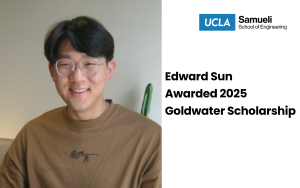

Hi, my name is Edward Sun and I am an undergrad at UCLA studying computer
science.
I am broadly interested in deep learning, language processing, and robotics.
More specifically, I am currently working on AI for science (domain specific multimodal reasoning models), robot learning (imitation learning and grounding LLMs), and agentic frameworks (multi-agent collaboration).
I was recently named a 2025 Goldwater Scholar.
My works done at UCLA, Stony Brook, Columbia, UCSD, and Johns
Hopkins, can all be found under the
papers section of this site.
I also lead ML/NLP building language agents at a start up founded by Roman Coppola.
In my free time, I like drawing, playing basketball, gardening, and eating
yummy food!